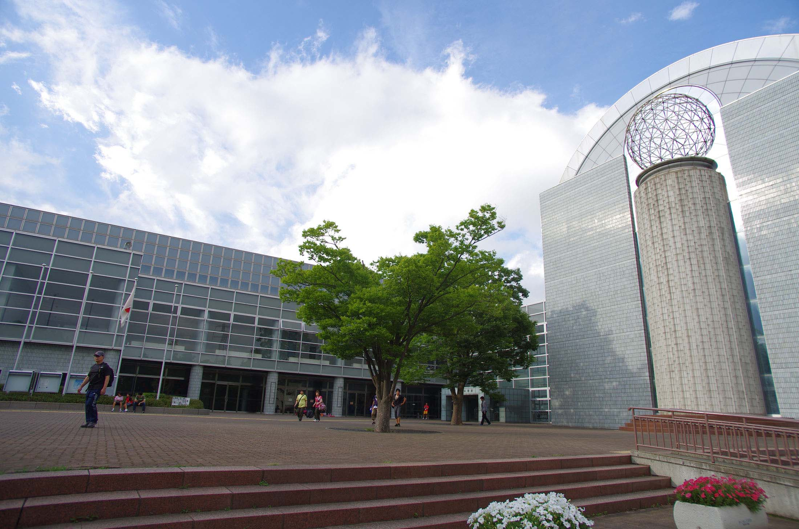
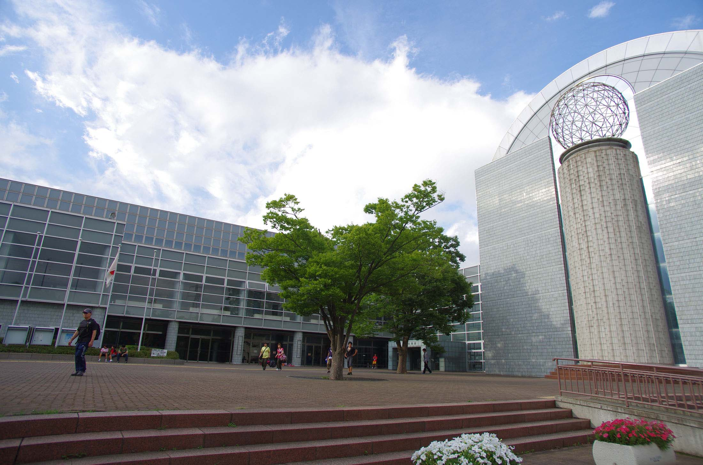
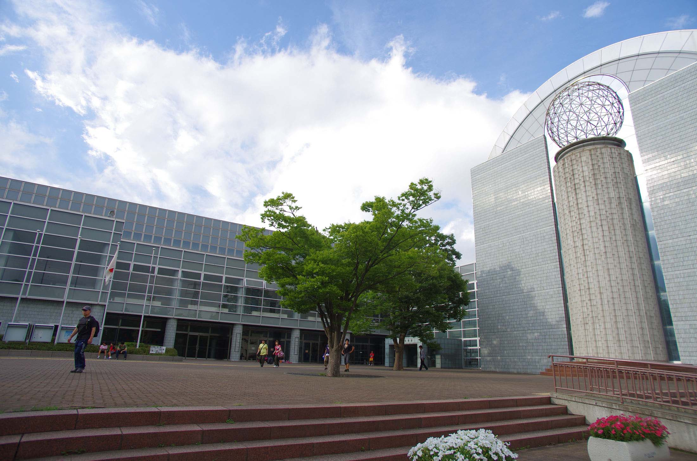

sanctuary
平塚総合体育館
 

平塚総合体育館は、神奈川県決勝リーグで湘北と陵南が試合した体育館です。平塚総合体育館は平塚市総合公園内にある体育館で、体育室が3室に武道場が2室、弓道場や温水プールなど施設が充実しています。
体育館内には、スラムダンクの作中に登場したシーンが展示されています。男子Bリーグの横浜ビー・コルセアーズの準ホームアリーナ、川崎ブレイブサンダースのホームゲーム会場に使用されるなど、バスケットに縁があるようです。
sanctuary

平塚総合体育館は、神奈川県決勝リーグで湘北と陵南が試合した体育館です。平塚総合体育館は平塚市総合公園内にある体育館で、体育室が3室に武道場が2室、弓道場や温水プールなど施設が充実しています。
体育館内には、スラムダンクの作中に登場したシーンが展示されています。男子Bリーグの横浜ビー・コルセアーズの準ホームアリーナ、川崎ブレイブサンダースのホームゲーム会場に使用されるなど、バスケットに縁があるようです。